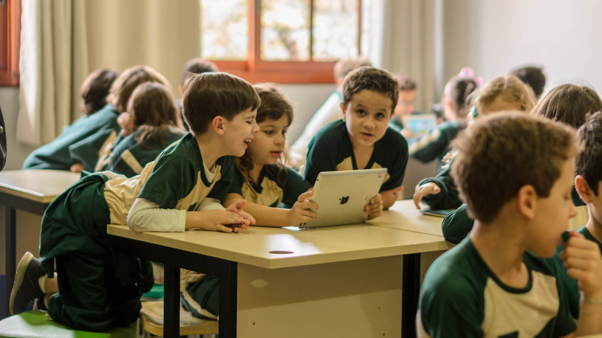

ブラジルのデジタル教育
デジタル教育とは？
デジタル教育とは、インターネットやパソコン、タブレット、スマートフォンなどのデジタル技術を活用して行う新しい形の教育です。 これには、オンライン授業、教育用アプリ、電子教科書、学習管理システム（LMS）など、さまざまなツールや方法が含まれます。 デジタル教育は、時間や場所にとらわれずに学ぶことができるため、世界中のどこにいても質の高い教育を受けることが可能になります。
また、学習者一人ひとりの理解度や進み具合に合わせて内容を調整できるため、個別最適化された学びが実現しやすくなります。 さらに、先生や生徒のコミュニケーションも、チャットやビデオ会議などを通じてより柔軟に行えるようになります。 デジタル教育は、現代社会における新しい学びの形として、ますます重要性を増しています。
歴史

ブラジルにおけるデジタル教育の始まりは、1990年代後半から2000年代初めにかけて、インターネットの普及とともに少しずつ進んできました。 当初は主に大学レベルの遠隔教育（EAD）が中心で、働く社会人や地方に住む学生たちに学習の機会を提供するものでした。
2000年代後半になると、政府の支援により学校へのコンピューター導入やインターネット環境の整備が進み、基礎教育でもデジタル技術の活用が広がり始めました。 たとえば、「ProInfo」という連邦政府のプログラムでは、公立学校にパソコンやIT教育を導入する取り組みが行われました。
しかし、デジタル教育が急速に発展した大きなきっかけは、2020年の新型コロナウイルスのパンデミックでした。 全国の学校が一斉に対面授業を停止したことで、多くの学校がオンライン授業やデジタル教材を急遽導入する必要に迫られました。 この出来事をきっかけに、教育機関や教師、学生の間でデジタル教育に対する理解と関心が一気に高まりました。
現在では、多くの学校や大学がハイブリッド形式（対面＋オンライン）を取り入れ、教育の質とアクセスの両方を向上させる取り組みが続いています。 ブラジルのデジタル教育は、今後さらに発展し、多様な学びのスタイルを支える重要な要素となるでしょう。